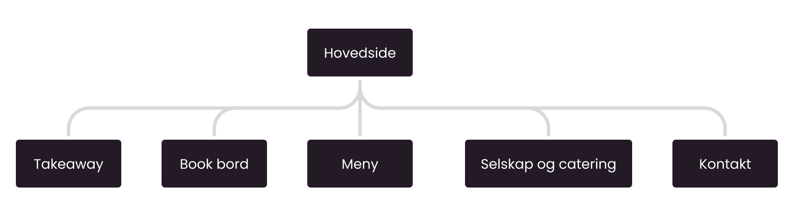
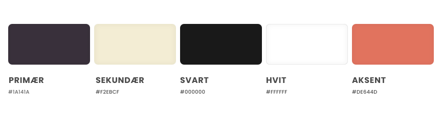
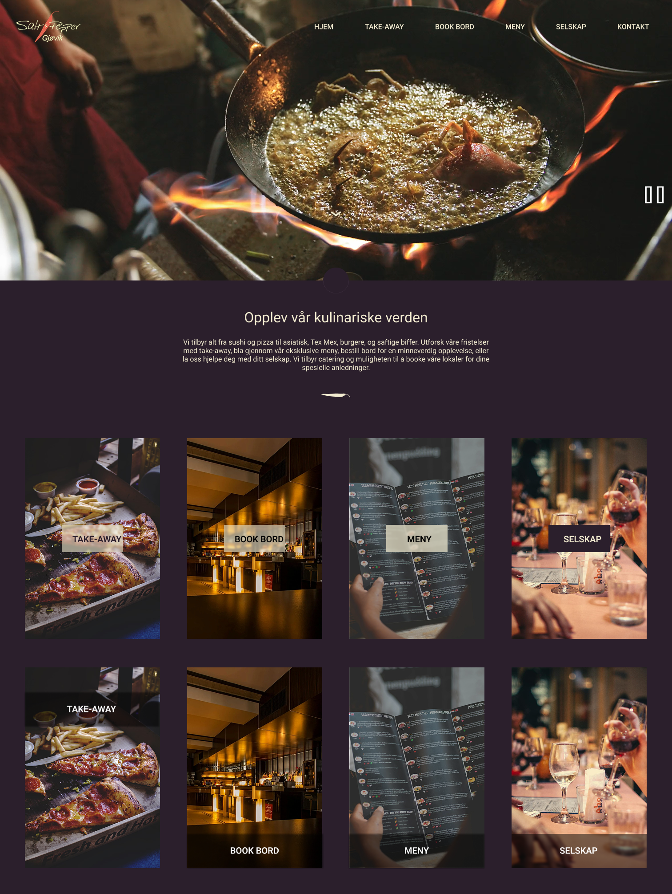
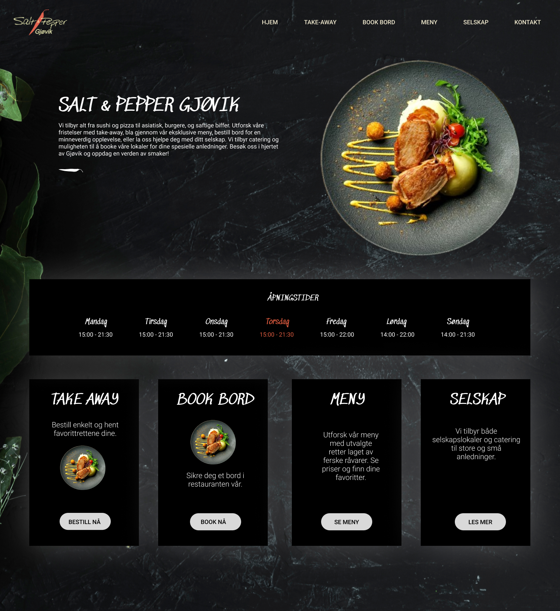

Designprosessen
Gjennom en analyse av den eksisterende Wix-løsningen identifiserte jeg flere hindringer og forvirringsmomenter for brukeren. Den største utfordringen var en uryddig informasjonsarkitektur som hadde ulikt design og innhold på mobil og desktop. Dette tvang gjestene til å lete gjennom mange lag for å finne informasjonen de trengte.
I Figma jobbet jeg meg gjennom flere runder med skisser for å lande på den beste løsningen. Ved å rydde opp i informasjonsarkitekturen, gjorde jeg det logisk og enkelt å finne frem til det folk faktisk leter etter: menyen, åpningstider, takeaway og bordbestilling. Basert på dette satte jeg opp et nytt sitemap:

Siden de fleste gjester besøker siden via mobil, la jeg ekstra vekt på mobilvennlighet. Jeg forenklet navigasjonen og sørget for at knapper og tekst er lette å bruke på små skjermer.
Visuell identitet
Det visuelle uttrykket er en videreføring av restaurantens eksisterende farger, men selve sammensetningen er i stor grad inspirert av det fysiske interiøret deres. Jeg har valgt fonter som gir et elegant uttrykk, og som står i stil med restaurantens profil.

Iterasjoner og prototyping
Gjennom flere runder med skisser og prototyper i Figma, utforsket jeg ulike retninger for det visuelle uttrykket. Jeg testet både lyse og mørke fargepaletter for å se hva som fungerte best, og falt til slutt på et mørkere design da det gjenspeilet restuarnten bedre. Forsiden krevde flest iterasjoner. Jeg testet mange ulike varianter av knapper, bokser og plasseringer for å finne en løsning der de ulike elementene komplementerte hverandre, uten at det tok opp for mye plass eller føltes rotete.
Jeg eksperimenterte også med bruk av video som bakgrunn øverst i heroen, men landet på at det ble forstyrrende selv om det kan fungere som et blikkfang. Derfor valgte jeg heller å plassere videoen lenger ned på siden, slik at den fungerer som en stemningsskaper uten å stjele fokus.


Teknisk gjennomføring
Siden restauranten ville flytte nettsiden fra Wix til WordPress, innebar prosjektet tekniske oppgaver jeg ikke hadde gjort før. Den største utfordringen var selve flyttingen av domenet mellom ulike CMS-plattformer. Jeg satt meg inn i hvordan man endrer DNS-innstillinger for å sørge for at den eksisterende lenken pekte riktig til den nye løsningen. Dette var en bratt læringskurve men som ga meg en større forståelse for infrastrukturen bak en nettside.
Det var mye nytt å sette seg inn i, og jeg møtte på mange tekniske begreper jeg ikke kjente til fra før. Informasjonen jeg trengte var spredt hos ulike leverandører, så det krevde mye graving for å få oversikt. Samtidig måtte jeg designe og klargjøre den nye siden bak kulissene, slik at gjestene kunne bruke den gamle siden som normalt helt frem til alt var klart. Da selve flyttingen skjedde, lærte jeg at man må ha tålmodighet mens man venter på at endringene skal oppdateres og bli synlige for brukere over hele verden.
Løsningen
Takeaway er det mest synlige valget på forsiden, da dette var et hovedønske fra kunden. Ved å tydelig skille mellom vanlig bordbestilling, private arrangementer og catering, har vi gjort det enkelt for kunden å se alle mulighetene restauranten tilbyr.
- Takeaway som tydelig hovedfokus
- Enkel booking av bord og andre etasje
- Synliggjøring av catering og selskapsmenyer
- Mobilvennlig design


En sentral del av løsningen var å forenkle administrasjonen. Jeg var tidlig bevisst på at en tekstbasert menyløsning ville være mest gunstig for søkemotoroptimalisering, da Google lettere indekserer tekst enn lukkede dokumenter. Likevel landet vi i samråd med kunden på en løsning der menyene lastes opp som PDF-filer. Dette valget ble tatt for å prioritere kundens behov for en ekstremt rask og enkel måte å oppdatere innholdet selv i en travel hverdag, samtidig som vi har lagt grunnlaget for en fremtidig overgang til ren tekst når driften tillater det.
Per nå er menyene lagt inn som en PDF, noe som gir kunden en rask og enkel måte å oppdatere innholdet selv. Som et alternativ har jeg også utarbeidet en annen løsning med filtrering som er mer egnet for søkemotoroptimalisering. Siden søkemotorer har lettere for å lese tekst enn dokumenter, vil en slik struktur bidra til at restauranten blir mer synlig når folk søker etter spesifikke retter på nett. Denne løsningen er laget som et forslag til hvordan man kan ta steget videre fra PDF-en for å maksimere synligheten i søkeresultatene.
Hva har jeg lært fra dette prosjektet
Samarbeidet med kunden ga meg god innsikt i hvordan man balanserer restaurantens behov i hverdagen med tekniske krav til brukervennlighet. De viktigste lærdommene jeg tar med meg videre er:
- Erfaring med plattformbytte fra Wix til WordPress
- Vektlegging av kjernebehov
- Kommunikasjon med kunden i en prosjektsammenheng
Jeg har lært hva som kreves for å flytte en nettside mellom ulike publiseringsverktøy (CMS). Det var nervepirrende å vente på at domenet skulle oppdatere seg, før jeg endelig så at det nye designet var live for alle. Gjennom samtaler med kunden har jeg lært å håndtere ulike innspill og svare med konkrete løsningsforslag. Dette har lært meg å diskutere meg frem til resultater der kunden blir hørt, samtidig som vi alltid beholder fokuset på at brukeren skal ha det best mulig på siden.